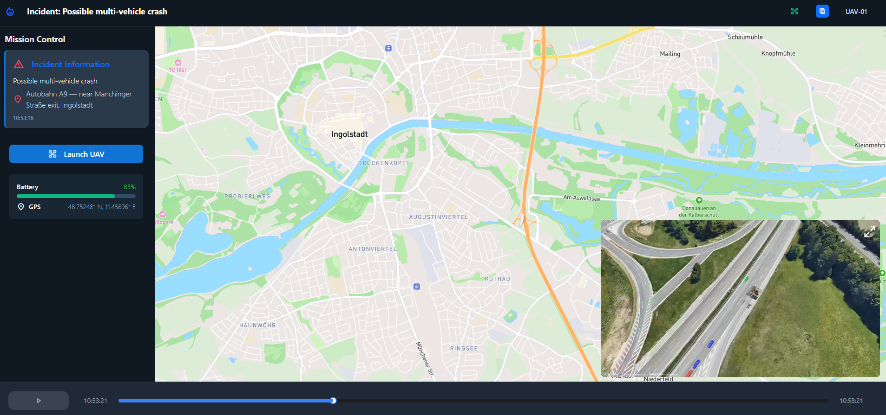
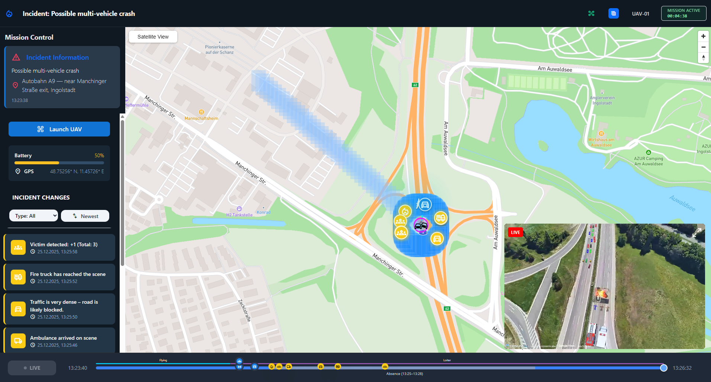
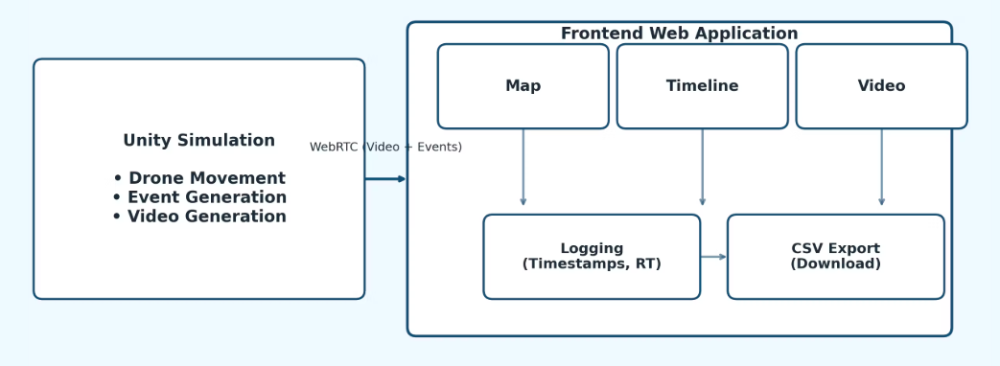
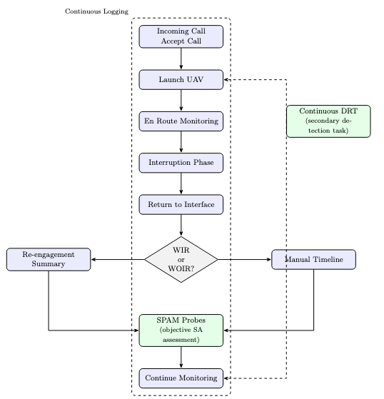
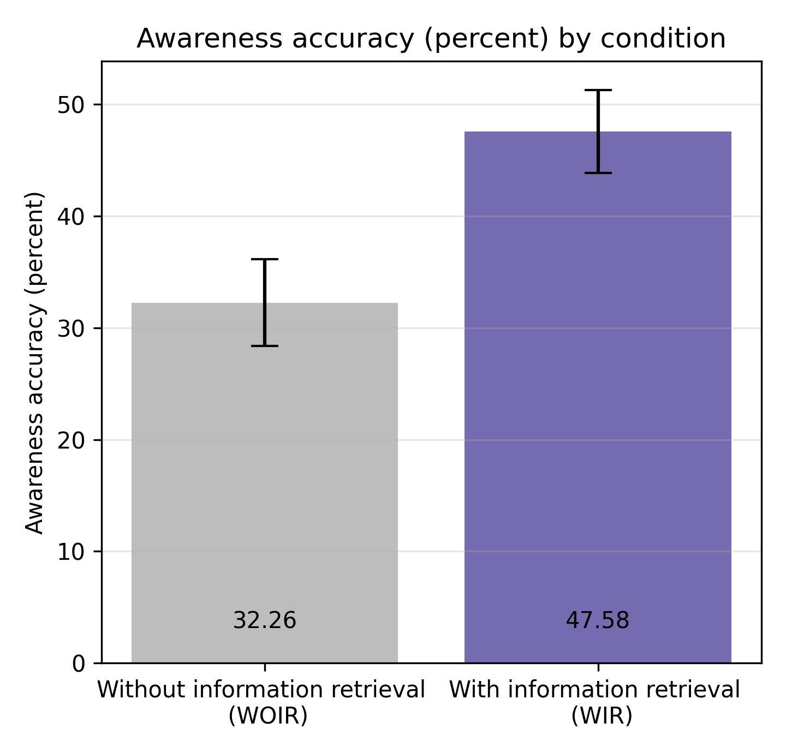
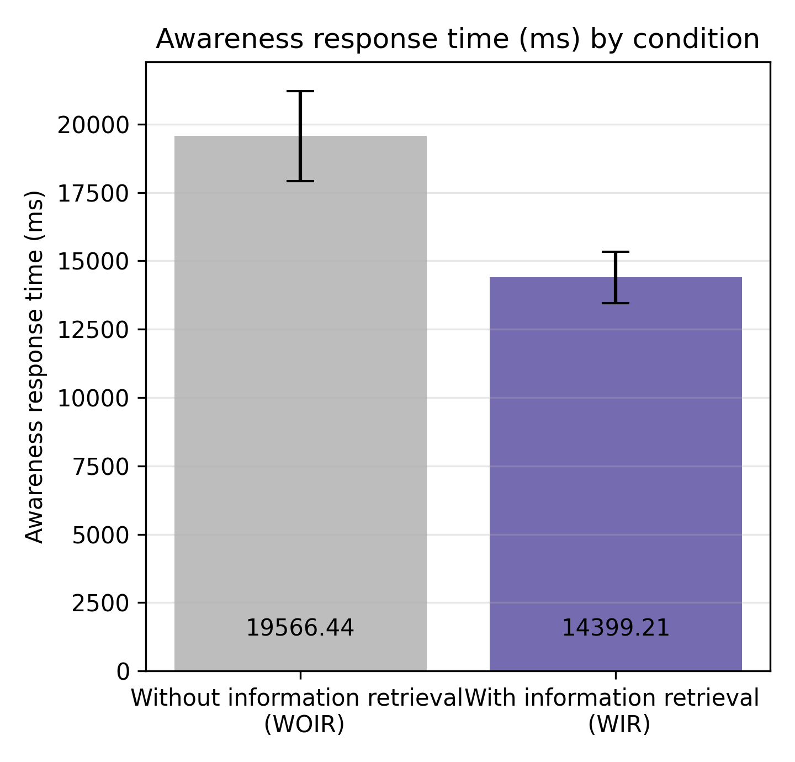
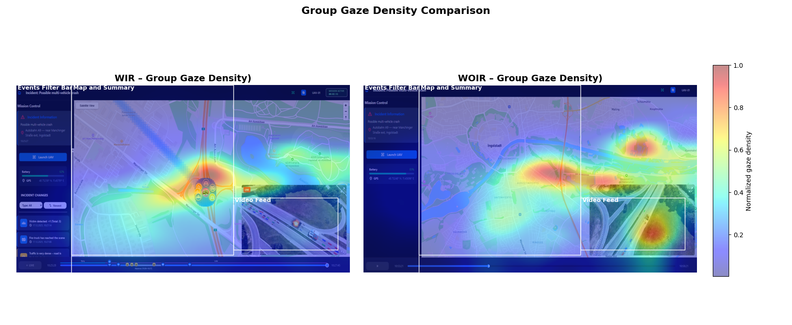

Supporting Information Retrieval During Multitasking
Master Thesis · Technische Hochschule Ingolstadt
N = 29 Experimental Study
Emergency dispatchers operate in interruption-prone environments where incident information evolves continuously. When operators return to an incident after an interruption they must reconstruct the situation from multiple information sources. Most UAV monitoring systems focus on video feeds and telemetry, but provide little support for identifying updates that occurred during absence.
Can structured information retrieval improve dispatcher situational awareness after interruptions during UAV monitoring tasks?
Two interface conditions were implemented to isolate the effect of structured retrieval support.

Timeline only. Dispatchers manually reconstruct incident updates after interruptions.

Event feed, filtering, and re-engagement summary support incident reconstruction.
The experimental platform integrates three systems used to simulate dispatcher monitoring workflows.

Participants monitored UAV information streams, experienced interruptions, and then reconstructed incident state using the interface.

Higher SPAM situational awareness accuracy
Faster SPAM response time
Participants in controlled experiment

SPAM Situational Awareness Accuracy

SPAM Response Time
Eye-tracking analysis showed increased fixation on retrieval components such as event feeds and summaries when structured information retrieval was available.

Python scripts used for experiment evaluation and statistical analysis.
View RepositoryStructured retrieval components such as event logs, filtering, and re-engagement summaries improved dispatcher situational awareness after interruptions. Task completion time and cognitive workload remained stable, indicating that structured information access supports re-engagement without increasing cognitive demand.